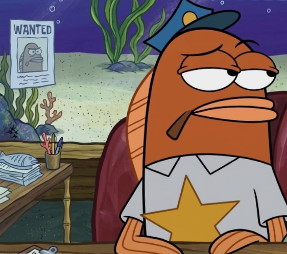
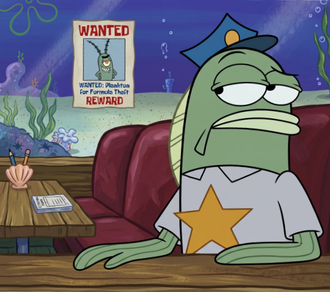

Agente Álvaro
Jefatura de investigación. Une las pistas del tablón.
«Yo vi la piña.»
Estos son los agentes asignados al caso. Si ves a alguno por la calle, no le digas que lo has reconocido.

Jefatura de investigación. Une las pistas del tablón.
«Yo vi la piña.»

Redacción y archivo. Tacha lo que no debes leer.
«Sin comentarios.»
Misión de la agencia
Reunir todas las teorías sobre Fondo de Bikini en un solo archivo, contrastarlas con las pruebas y descubrir qué pasa de verdad bajo el mar antes de que lo haga Plankton.
La agencia